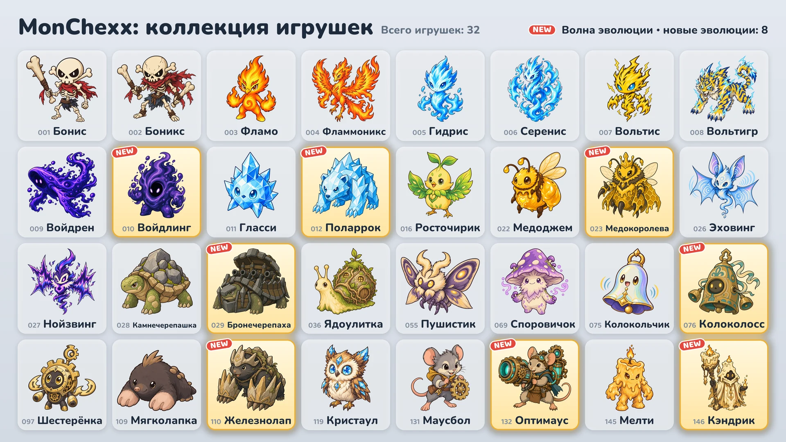

Сезон 1 · Обновление 02: Волна эволюции
16 октября в игру добавляются восемь новых эволюций.

Восемь новых эволюций
- Войдлинг: базовая форма — Войдрен · Танк
- Поларрок: базовая форма — Гласси · Танк / Воин
- Медокоролева: базовая форма — Медоджем · Поддержка / Стрелок
- Бронечерепаха: базовая форма — Камнечерепашка · Танк
- Колоколосс: базовая форма — Колокольчик · Танк / Поддержка
- Железнолап: базовая форма — Мягколапка · Танк / Ассасин
- Оптимаус: базовая форма — Маусбол · Стрелок
- Кэндрик: базовая форма — Мелти · Поддержка / Стрелок
Как получить
- Автоматы с игрушками (событие): Во время события (16–24 октября) в каждом автомате, кроме двух крайних в ряду, есть одна из новых эволюций вместе с двумя другими игрушками. После окончания события новые эволюции попадают в автоматы так же часто, как и остальные игрушки.
- Обмен игрушек: 10 копий можно обменять на игрушку на выбор («Обмен на выбор»), а 3 копии — на случайную игрушку («Обмен наугад»).
- Наборы игрушек: Новые эволюции тоже могут выпасть из наборов.
Как использовать эволюции
- Игрушки в эволюционной форме собираются отдельно, и их можно взять в команду сразу после получения.
- На экране «Собери команду» можно выбрать игрушку и сменить её форму кнопкой Базовая или Эволюция.
- В команде может быть только одна игрушка из каждой линии эволюции.
- Уровень игрушки в эволюционной форме растёт отдельно от уровня базовой игрушки.
Новые игрушки
Значения в процентах от силы атаки, силы магии или максимального здоровья растут вместе с уровнем игрушки.
Войдлинг · Танк · Дальность: 1 клетка
- Поглощение пустоты: Максимальное здоровье увеличивается на 560% силы магии + 6% максимального здоровья на начало боя, и Войдлинг восстанавливает столько же здоровья. Затем наносит всем врагам в пределах 1 клетки магический урон в размере 10% своего текущего здоровья. Прибавка к максимальному здоровью сохраняется до конца боя.
- Пир пустоты: Получает 10 ед. маны каждый раз, когда враг в пределах 4 клеток применяет активное умение.
Поларрок · Танк/Воин · Дальность: 1 клетка
- Морозный удар: Наносит текущей цели физический урон в размере 820% силы атаки, а врагам в пределах 1 клетки от неё — 385%, и накладывает Иней (−15% скорости атаки на 8 сек.). Когда на текущей цели накапливается 3 наложения Инея, она получает Заморозку на 1,5 сек. и не может ни действовать, ни получать ману.
- Кристальная кожа: Получаемый магический урон снижается на 20%, в том числе периодический.
Медокоролева · Поддержка/Стрелок · Дальность: 3 клетки
- Королевское желе: Восстанавливает всем своим пчёлам здоровье в размере 100% их максимального здоровья и даёт им +200% к скорости атаки на 3 сек. Призывает ещё 1 пчелу, если пчёл меньше 3.
- Пчелиный рой: Одновременно может быть до 3 пчёл. Их характеристики зависят от уровня Медокоролевы, а каждая пчела каждую секунду получает урон в размере 4% своего максимального здоровья. Когда Медокоролева выбывает из боя, пчёлы впадают в ярость: наносимый и получаемый ими урон удваивается.
Бронечерепаха · Танк · Дальность: 1 клетка
- Круговой обстрел: Вращается на месте против часовой стрелки и стреляет из пушки 6 раз. Каждый выстрел наносит первому врагу в пределах 2 клеток в этом направлении физический урон в размере 1540% силы атаки. Во время стрельбы не двигается и не получает ману, а при Оглушении или Заморозке прекращает стрельбу.
- Панцирь-крепость: За каждого врага в пределах 1 клетки получает +35 к броне и +35 к сопротивлению магии.
Колоколосс · Танк/Поддержка · Дальность: 1 клетка
- Набат: Наносит всем врагам в пределах 2 клеток магический урон в размере 555% силы магии и накладывает на них Провокацию на 2 сек. В это время возвращает всем врагам в пределах 2 клеток 35% урона от каждой полученной обычной атаки врага (до снижения) в виде магического урона.
- Резонанс: Каждый раз, когда другой союзник в пределах 2 клеток применяет активное умение, восстанавливает себе здоровье в размере 120% силы магии.
Железнолап · Танк/Ассасин · Дальность: 1 клетка
- Подземный штурм: Снимает с себя все ослабления, уходит под землю и перемещается на свободную клетку, вокруг которой больше всего врагов, а затем наносит всем врагам в пределах 1 клетки физический урон в размере 740% силы атаки. Под землёй неуязвим для атак.
- Каменные когти: Получает прибавку к броне в размере 50% своей силы атаки.
- Начинает бой с 0 ед. маны.
Оптимаус · Стрелок · Дальность: 4 клетки
- Лазерная пушка: Заряжается 1,5 сек., затем выпускает в направлении текущей цели лазерный луч шириной в 1 клетку до края арены и наносит всем задетым врагам магический урон в размере 1210% силы атаки. Если во время зарядки Оптимаус получает Оглушение или Заморозку, выстрел отменяется.
- Схема разогрева: Каждая обычная атака увеличивает скорость атаки на 15% (всего не более чем на 100%). Применение активного умения сбрасывает эту прибавку.
Кэндрик · Поддержка/Стрелок · Дальность: 3 клетки
- Негаснущий огонь: Ставит на союзника с наименьшим здоровьем (кроме себя) метку и даёт ему щит в размере 375% силы магии на 5 сек. Если прямой урон должен вывести союзника с меткой из боя, Кэндрик принимает на себя 200% этого урона вместо него.
- Тающий воск: Получаемый Кэндриком прямой урон снимается со здоровья постепенно в течение 4 сек.
Рейтинговые матчи и значки
- Соперники в рейтинговых матчах тоже используют новые эволюции.
- Восемь новых эволюций не учитываются для значка «Коллекция сезона 1».
- Значок «Знаток эволюции» выдаётся, если у игрока есть 5 разных игрушек в эволюционной форме. Теперь в игре 13 игрушек в эволюционной форме.
Изменения баланса всех игрушек можно посмотреть в описании обновления «Баланс и боевая система».